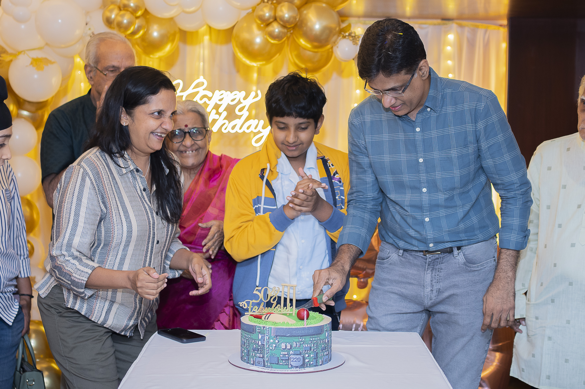
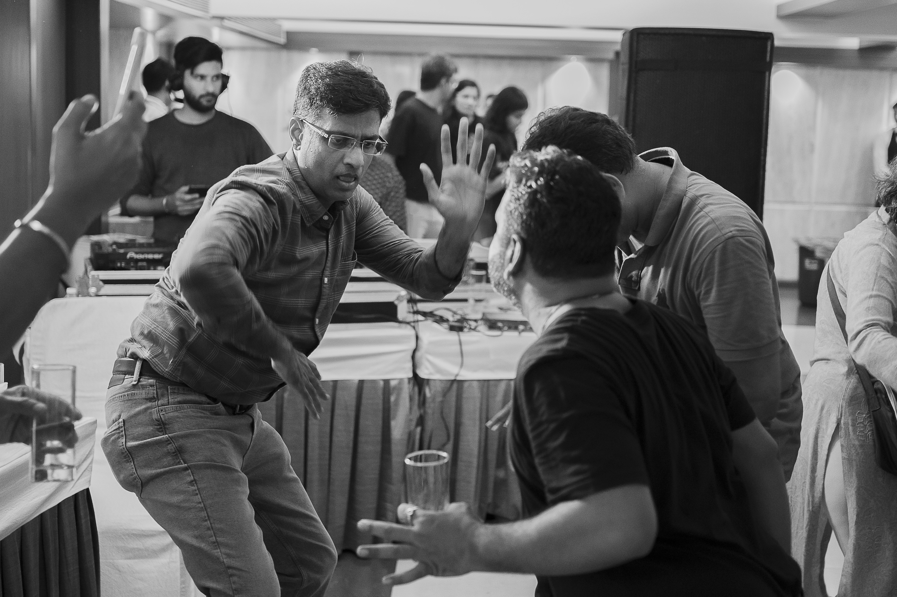
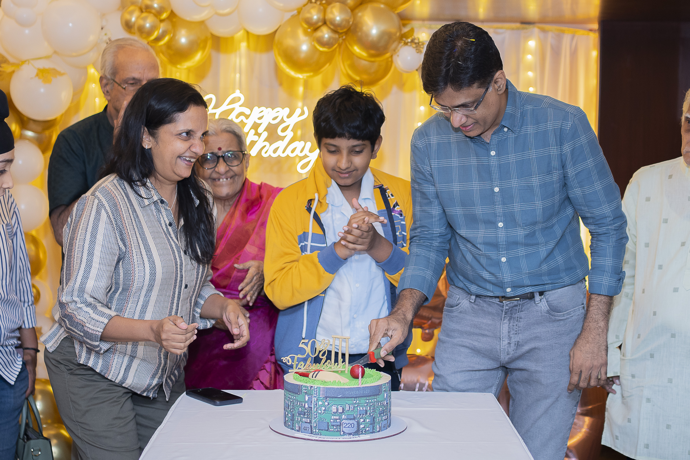
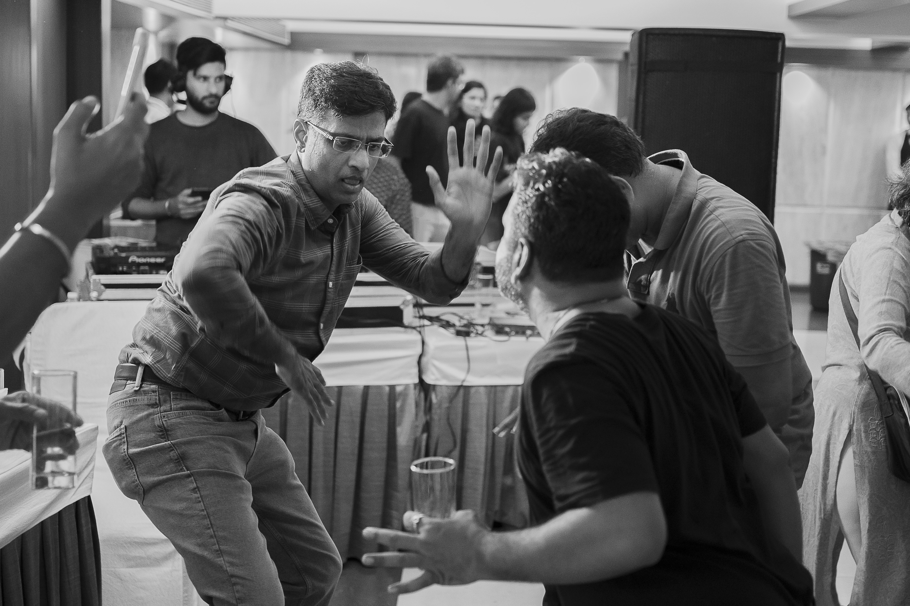
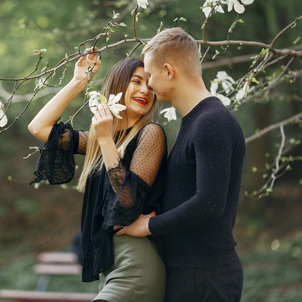
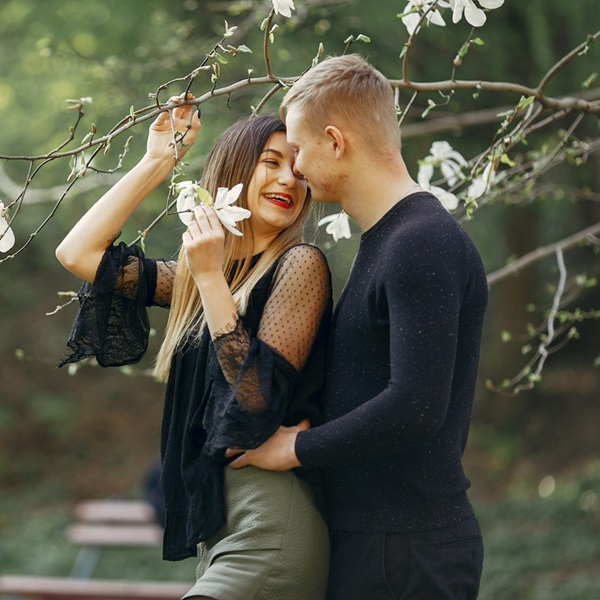

WE CAPTURE THE MOMENTS
Welcome to Ravi Yadav Photography! At Capturer, we specialize in freezing those fleeting moments in time that hold immense significance for you. I’m Ravi Yadav, and through my lens, I aim to transform ordinary moments into extraordinary memories.
With a deep passion for photography and a keen eye for detail, I focus on capturing the essence of every event. Whether it's a milestone celebration, a candid portrait, or the breathtaking beauty of nature, I believe every moment has its own story to tell.
At Ravi Yadav Photography, we are committed to making your cherished memories last a lifetime. Trust us to capture the magic of your life's journey, one frame at a time.


 





 
